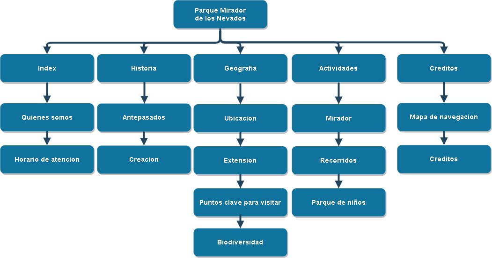

Creditos
Inicio
Historia
Geografia
Actividades
Creditos
Mapa de Navegacion
Para está página web se utilizó el siguiente mapa 
Creditos
Para la realizacion de esta pagina, se tomo la informacion de los siguientes sitios webs:
Informacion del parque:
Parque Mirador de los Nevados
Doce datos para enamorarse del mirador de los nevados
Convertidor de png a ico
https://convertico.com/
Fuentes
http://www.losttype.com/font/?name=buffon
Fondos
https://givehcgrowhc.org/wp-content/uploads/2017/10/HCCF_NEWPageHeader.gif
https://wall.alphacoders.com/big.php?i=837049&lang=Spanish
Imagenes
http://www.bogota.gov.co/content/12-datos-para-enamorarse-del-mirador-de-los-nevados